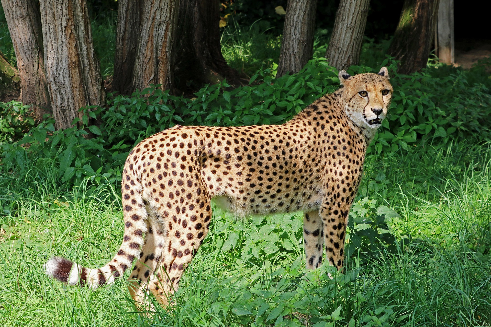

Cheetah

Four characteristics of Cheetah
- The Cheetah (Acinonyx jubatus) is the fastest creature on land. It can accelerate from 0 to 97km/h (60 mph) under 3 seconds.
- Cheetahs top speed averages between 96 - 112km/h (60 - 70mph)
- Cheetahs can not roar. They make purr sound when inhaling and exhaling.
- The average lifespan of Cheetahs is 8 to 10 years in their natural habitat.